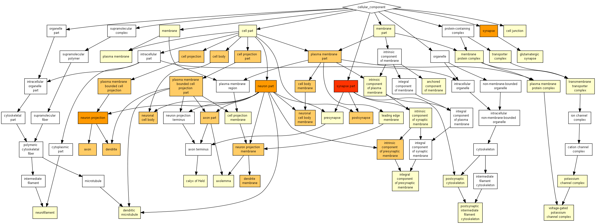

| > 10-3 | 10-3 to 10-5 | 10-5 to 10-7 | 10-7 to 10-9 | < 10-9 |

| GO term | Description | P-value | FDR q-value | Enrichment (N, B, n, b) | Genes |
| GO:0044456 | synapse part | 5.88E-10 | 1.13E-6 | 3.69 (16689,1066,123,29) |
[+] Show genes
Rims3 - regulating synaptic membrane exocytosis 3
Slc17a6 - solute carrier family 17 (sodium-dependent inorganic phosphate cotransporter), member 6 Nefh - neurofilament, heavy polypeptide Kcnc2 - potassium voltage gated channel, shaw-related subfamily, member 2 Myo5a - myosin va Kif1a - kinesin family member 1a Kcna2 - potassium voltage-gated channel, shaker-related subfamily, member 2 Gabra4 - gamma-aminobutyric acid (gaba) a receptor, subunit alpha 4 Atp1a3 - atpase, na+/k+ transporting, alpha 3 polypeptide Prkcd - protein kinase c, delta Rgs7bp - regulator of g-protein signalling 7 binding protein Nrxn3 - neurexin iii Rab3c - rab3c, member ras oncogene family Cplx1 - complexin 1 Zfp804a - zinc finger protein 804a Chrna4 - cholinergic receptor, nicotinic, alpha polypeptide 4 Atp6ap2 - atpase, h+ transporting, lysosomal accessory protein 2 Kcnc1 - potassium voltage gated channel, shaw-related subfamily, member 1 Ina - internexin neuronal intermediate filament protein, alpha Gabbr2 - gamma-aminobutyric acid (gaba) b receptor, 2 Map1a - microtubule-associated protein 1 a Atp2b1 - atpase, ca++ transporting, plasma membrane 1 Ngf - nerve growth factor Tiam1 - t cell lymphoma invasion and metastasis 1 Ntng1 - netrin g1 Hcn4 - hyperpolarization-activated, cyclic nucleotide-gated k+ 4 Cdkl5 - cyclin-dependent kinase-like 5 Sptbn1 - spectrin beta, non-erythrocytic 1 Plcb4 - phospholipase c, beta 4 |
| GO:0097458 | neuron part | 4.94E-9 | 4.75E-6 | 2.71 (16689,1905,123,38) |
[+] Show genes
Tubb3 - tubulin, beta 3 class iii
Gpc1 - glypican 1 Rims3 - regulating synaptic membrane exocytosis 3 Slc17a6 - solute carrier family 17 (sodium-dependent inorganic phosphate cotransporter), member 6 Nefh - neurofilament, heavy polypeptide Kcnc2 - potassium voltage gated channel, shaw-related subfamily, member 2 Hrh3 - histamine receptor h3 Myo5a - myosin va Pcp4 - purkinje cell protein 4 Rap1gap - rap1 gtpase-activating protein Kif1a - kinesin family member 1a Kcna2 - potassium voltage-gated channel, shaker-related subfamily, member 2 Gabra4 - gamma-aminobutyric acid (gaba) a receptor, subunit alpha 4 Atp1a3 - atpase, na+/k+ transporting, alpha 3 polypeptide Cit - citron Rgs7bp - regulator of g-protein signalling 7 binding protein Nrxn3 - neurexin iii Kcnq3 - potassium voltage-gated channel, subfamily q, member 3 Nexn - nexilin Rab3c - rab3c, member ras oncogene family Cplx1 - complexin 1 Zfp804a - zinc finger protein 804a Chrna4 - cholinergic receptor, nicotinic, alpha polypeptide 4 Atp6ap2 - atpase, h+ transporting, lysosomal accessory protein 2 Kcnc1 - potassium voltage gated channel, shaw-related subfamily, member 1 Gabbr2 - gamma-aminobutyric acid (gaba) b receptor, 2 Cntn4 - contactin 4 Map1a - microtubule-associated protein 1 a Atp2b1 - atpase, ca++ transporting, plasma membrane 1 Ngf - nerve growth factor Tiam1 - t cell lymphoma invasion and metastasis 1 Ntng1 - netrin g1 Hcn4 - hyperpolarization-activated, cyclic nucleotide-gated k+ 4 Thy1 - thymus cell antigen 1, theta Spock1 - sparc/osteonectin, cwcv and kazal-like domains proteoglycan 1 Cdkl5 - cyclin-dependent kinase-like 5 Sptbn1 - spectrin beta, non-erythrocytic 1 Plcb4 - phospholipase c, beta 4 |
| GO:0045202 | synapse | 1.67E-8 | 1.07E-5 | 3.38 (16689,1083,123,27) |
[+] Show genes
Atp2a2 - atpase, ca++ transporting, cardiac muscle, slow twitch 2
Gpc1 - glypican 1 Rims3 - regulating synaptic membrane exocytosis 3 Slc17a6 - solute carrier family 17 (sodium-dependent inorganic phosphate cotransporter), member 6 Nefh - neurofilament, heavy polypeptide Kcnc2 - potassium voltage gated channel, shaw-related subfamily, member 2 Hrh3 - histamine receptor h3 Myo5a - myosin va Kcna2 - potassium voltage-gated channel, shaker-related subfamily, member 2 Gabra4 - gamma-aminobutyric acid (gaba) a receptor, subunit alpha 4 Atp1a3 - atpase, na+/k+ transporting, alpha 3 polypeptide Rgs7bp - regulator of g-protein signalling 7 binding protein Nrxn3 - neurexin iii Cplx1 - complexin 1 Chrna4 - cholinergic receptor, nicotinic, alpha polypeptide 4 Atp6ap2 - atpase, h+ transporting, lysosomal accessory protein 2 Kcnc1 - potassium voltage gated channel, shaw-related subfamily, member 1 Ina - internexin neuronal intermediate filament protein, alpha Gabbr2 - gamma-aminobutyric acid (gaba) b receptor, 2 Map1a - microtubule-associated protein 1 a Atp2b1 - atpase, ca++ transporting, plasma membrane 1 Tiam1 - t cell lymphoma invasion and metastasis 1 Ntng1 - netrin g1 Spock1 - sparc/osteonectin, cwcv and kazal-like domains proteoglycan 1 Cdkl5 - cyclin-dependent kinase-like 5 Sptbn1 - spectrin beta, non-erythrocytic 1 Plcb4 - phospholipase c, beta 4 |
| GO:0043005 | neuron projection | 4.64E-8 | 2.23E-5 | 3.13 (16689,1215,123,28) |
[+] Show genes
Tubb3 - tubulin, beta 3 class iii
Slc17a6 - solute carrier family 17 (sodium-dependent inorganic phosphate cotransporter), member 6 Nefh - neurofilament, heavy polypeptide Kcnc2 - potassium voltage gated channel, shaw-related subfamily, member 2 Hrh3 - histamine receptor h3 Myo5a - myosin va Pcp4 - purkinje cell protein 4 Rap1gap - rap1 gtpase-activating protein Kif1a - kinesin family member 1a Kcna2 - potassium voltage-gated channel, shaker-related subfamily, member 2 Gabra4 - gamma-aminobutyric acid (gaba) a receptor, subunit alpha 4 Atp1a3 - atpase, na+/k+ transporting, alpha 3 polypeptide Rgs7bp - regulator of g-protein signalling 7 binding protein Kcnq3 - potassium voltage-gated channel, subfamily q, member 3 Nexn - nexilin Cplx1 - complexin 1 Zfp804a - zinc finger protein 804a Chrna4 - cholinergic receptor, nicotinic, alpha polypeptide 4 Atp6ap2 - atpase, h+ transporting, lysosomal accessory protein 2 Kcnc1 - potassium voltage gated channel, shaw-related subfamily, member 1 Cntn4 - contactin 4 Gabbr2 - gamma-aminobutyric acid (gaba) b receptor, 2 Map1a - microtubule-associated protein 1 a Ngf - nerve growth factor Tiam1 - t cell lymphoma invasion and metastasis 1 Hcn4 - hyperpolarization-activated, cyclic nucleotide-gated k+ 4 Thy1 - thymus cell antigen 1, theta Plcb4 - phospholipase c, beta 4 |
| GO:0030424 | axon | 1.23E-7 | 4.74E-5 | 5.00 (16689,434,123,16) |
[+] Show genes
Tubb3 - tubulin, beta 3 class iii
Zfp804a - zinc finger protein 804a Kcnc1 - potassium voltage gated channel, shaw-related subfamily, member 1 Map1a - microtubule-associated protein 1 a Ngf - nerve growth factor Kcnc2 - potassium voltage gated channel, shaw-related subfamily, member 2 Nefh - neurofilament, heavy polypeptide Myo5a - myosin va Hcn4 - hyperpolarization-activated, cyclic nucleotide-gated k+ 4 Rap1gap - rap1 gtpase-activating protein Pcp4 - purkinje cell protein 4 Kif1a - kinesin family member 1a Kcna2 - potassium voltage-gated channel, shaker-related subfamily, member 2 Atp1a3 - atpase, na+/k+ transporting, alpha 3 polypeptide Rgs7bp - regulator of g-protein signalling 7 binding protein Nexn - nexilin |
| GO:0033267 | axon part | 1.53E-7 | 4.91E-5 | 4.92 (16689,441,123,16) |
[+] Show genes
Tubb3 - tubulin, beta 3 class iii
Zfp804a - zinc finger protein 804a Kcnc1 - potassium voltage gated channel, shaw-related subfamily, member 1 Map1a - microtubule-associated protein 1 a Slc17a6 - solute carrier family 17 (sodium-dependent inorganic phosphate cotransporter), member 6 Tiam1 - t cell lymphoma invasion and metastasis 1 Kcnc2 - potassium voltage gated channel, shaw-related subfamily, member 2 Hcn4 - hyperpolarization-activated, cyclic nucleotide-gated k+ 4 Thy1 - thymus cell antigen 1, theta Spock1 - sparc/osteonectin, cwcv and kazal-like domains proteoglycan 1 Kcna2 - potassium voltage-gated channel, shaker-related subfamily, member 2 Atp1a3 - atpase, na+/k+ transporting, alpha 3 polypeptide Kcnq3 - potassium voltage-gated channel, subfamily q, member 3 Cdkl5 - cyclin-dependent kinase-like 5 Sptbn1 - spectrin beta, non-erythrocytic 1 Cplx1 - complexin 1 |
| GO:0120025 | plasma membrane bounded cell projection | 2.37E-7 | 6.52E-5 | 2.57 (16689,1741,123,33) |
[+] Show genes
Tubb3 - tubulin, beta 3 class iii
Atp2a2 - atpase, ca++ transporting, cardiac muscle, slow twitch 2 Amotl1 - angiomotin-like 1 Slc17a6 - solute carrier family 17 (sodium-dependent inorganic phosphate cotransporter), member 6 Nefh - neurofilament, heavy polypeptide Kcnc2 - potassium voltage gated channel, shaw-related subfamily, member 2 Hrh3 - histamine receptor h3 Myo5a - myosin va Pcp4 - purkinje cell protein 4 Rap1gap - rap1 gtpase-activating protein Kif1a - kinesin family member 1a Kcna2 - potassium voltage-gated channel, shaker-related subfamily, member 2 Gabra4 - gamma-aminobutyric acid (gaba) a receptor, subunit alpha 4 Atp1a3 - atpase, na+/k+ transporting, alpha 3 polypeptide Cit - citron Rgs7bp - regulator of g-protein signalling 7 binding protein Kcnq3 - potassium voltage-gated channel, subfamily q, member 3 Nexn - nexilin Cplx1 - complexin 1 Zfp804a - zinc finger protein 804a Chrna4 - cholinergic receptor, nicotinic, alpha polypeptide 4 Atp6ap2 - atpase, h+ transporting, lysosomal accessory protein 2 Kcnc1 - potassium voltage gated channel, shaw-related subfamily, member 1 Gabbr2 - gamma-aminobutyric acid (gaba) b receptor, 2 Cntn4 - contactin 4 Map1a - microtubule-associated protein 1 a Ngf - nerve growth factor Vipr2 - vasoactive intestinal peptide receptor 2 Tiam1 - t cell lymphoma invasion and metastasis 1 Hcn4 - hyperpolarization-activated, cyclic nucleotide-gated k+ 4 Thy1 - thymus cell antigen 1, theta Kitl - kit ligand Plcb4 - phospholipase c, beta 4 |
| GO:0042995 | cell projection | 1.33E-6 | 3.2E-4 | 2.30 (16689,2065,123,35) |
[+] Show genes
Tubb3 - tubulin, beta 3 class iii
Atp2a2 - atpase, ca++ transporting, cardiac muscle, slow twitch 2 Amotl1 - angiomotin-like 1 Slc17a6 - solute carrier family 17 (sodium-dependent inorganic phosphate cotransporter), member 6 Nefh - neurofilament, heavy polypeptide Kcnc2 - potassium voltage gated channel, shaw-related subfamily, member 2 Hrh3 - histamine receptor h3 Myo5a - myosin va Pcp4 - purkinje cell protein 4 Rap1gap - rap1 gtpase-activating protein Kif1a - kinesin family member 1a Kcna2 - potassium voltage-gated channel, shaker-related subfamily, member 2 Gabra4 - gamma-aminobutyric acid (gaba) a receptor, subunit alpha 4 Atp1a3 - atpase, na+/k+ transporting, alpha 3 polypeptide Cit - citron Rgs7bp - regulator of g-protein signalling 7 binding protein Kcnq3 - potassium voltage-gated channel, subfamily q, member 3 Lynx1 - ly6/neurotoxin 1 Nexn - nexilin Cplx1 - complexin 1 Zfp804a - zinc finger protein 804a Chrna4 - cholinergic receptor, nicotinic, alpha polypeptide 4 Atp6ap2 - atpase, h+ transporting, lysosomal accessory protein 2 Kcnc1 - potassium voltage gated channel, shaw-related subfamily, member 1 Gabbr2 - gamma-aminobutyric acid (gaba) b receptor, 2 Cntn4 - contactin 4 Map1a - microtubule-associated protein 1 a Ngf - nerve growth factor Vipr2 - vasoactive intestinal peptide receptor 2 Tiam1 - t cell lymphoma invasion and metastasis 1 Hcn4 - hyperpolarization-activated, cyclic nucleotide-gated k+ 4 Thy1 - thymus cell antigen 1, theta Kitl - kit ligand Cdkl5 - cyclin-dependent kinase-like 5 Plcb4 - phospholipase c, beta 4 |
| GO:0030425 | dendrite | 1.34E-6 | 2.86E-4 | 4.18 (16689,519,123,16) |
[+] Show genes
Tubb3 - tubulin, beta 3 class iii
Chrna4 - cholinergic receptor, nicotinic, alpha polypeptide 4 Kcnc1 - potassium voltage gated channel, shaw-related subfamily, member 1 Map1a - microtubule-associated protein 1 a Ngf - nerve growth factor Kcnc2 - potassium voltage gated channel, shaw-related subfamily, member 2 Nefh - neurofilament, heavy polypeptide Hrh3 - histamine receptor h3 Myo5a - myosin va Thy1 - thymus cell antigen 1, theta Rap1gap - rap1 gtpase-activating protein Kif1a - kinesin family member 1a Kcna2 - potassium voltage-gated channel, shaker-related subfamily, member 2 Kcnq3 - potassium voltage-gated channel, subfamily q, member 3 Plcb4 - phospholipase c, beta 4 Cplx1 - complexin 1 |
| GO:0043025 | neuronal cell body | 2.3E-6 | 4.44E-4 | 3.79 (16689,608,123,17) |
[+] Show genes
Tubb3 - tubulin, beta 3 class iii
Zfp804a - zinc finger protein 804a Chrna4 - cholinergic receptor, nicotinic, alpha polypeptide 4 Gpc1 - glypican 1 Kcnc1 - potassium voltage gated channel, shaw-related subfamily, member 1 Map1a - microtubule-associated protein 1 a Tiam1 - t cell lymphoma invasion and metastasis 1 Nefh - neurofilament, heavy polypeptide Kcnc2 - potassium voltage gated channel, shaw-related subfamily, member 2 Myo5a - myosin va Hcn4 - hyperpolarization-activated, cyclic nucleotide-gated k+ 4 Rap1gap - rap1 gtpase-activating protein Kif1a - kinesin family member 1a Atp1a3 - atpase, na+/k+ transporting, alpha 3 polypeptide Cit - citron Kcnq3 - potassium voltage-gated channel, subfamily q, member 3 Cplx1 - complexin 1 |
| GO:0120038 | plasma membrane bounded cell projection part | 2.75E-6 | 4.81E-4 | 2.56 (16689,1485,123,28) |
[+] Show genes
Tubb3 - tubulin, beta 3 class iii
Slc17a6 - solute carrier family 17 (sodium-dependent inorganic phosphate cotransporter), member 6 Nefh - neurofilament, heavy polypeptide Kcnc2 - potassium voltage gated channel, shaw-related subfamily, member 2 Hrh3 - histamine receptor h3 Myo5a - myosin va Rap1gap - rap1 gtpase-activating protein Kif1a - kinesin family member 1a Kcna2 - potassium voltage-gated channel, shaker-related subfamily, member 2 Ndrg4 - n-myc downstream regulated gene 4 Gabra4 - gamma-aminobutyric acid (gaba) a receptor, subunit alpha 4 Atp1a3 - atpase, na+/k+ transporting, alpha 3 polypeptide Rgs7bp - regulator of g-protein signalling 7 binding protein Kcnq3 - potassium voltage-gated channel, subfamily q, member 3 Cplx1 - complexin 1 Zfp804a - zinc finger protein 804a Chrna4 - cholinergic receptor, nicotinic, alpha polypeptide 4 Kcnc1 - potassium voltage gated channel, shaw-related subfamily, member 1 Map1a - microtubule-associated protein 1 a Atp2b1 - atpase, ca++ transporting, plasma membrane 1 Ngf - nerve growth factor Tiam1 - t cell lymphoma invasion and metastasis 1 Thy1 - thymus cell antigen 1, theta Hcn4 - hyperpolarization-activated, cyclic nucleotide-gated k+ 4 Spock1 - sparc/osteonectin, cwcv and kazal-like domains proteoglycan 1 Cdkl5 - cyclin-dependent kinase-like 5 Sptbn1 - spectrin beta, non-erythrocytic 1 Plcb4 - phospholipase c, beta 4 |
| GO:0044463 | cell projection part | 2.75E-6 | 4.41E-4 | 2.56 (16689,1485,123,28) |
[+] Show genes
Tubb3 - tubulin, beta 3 class iii
Slc17a6 - solute carrier family 17 (sodium-dependent inorganic phosphate cotransporter), member 6 Nefh - neurofilament, heavy polypeptide Kcnc2 - potassium voltage gated channel, shaw-related subfamily, member 2 Hrh3 - histamine receptor h3 Myo5a - myosin va Rap1gap - rap1 gtpase-activating protein Kif1a - kinesin family member 1a Kcna2 - potassium voltage-gated channel, shaker-related subfamily, member 2 Ndrg4 - n-myc downstream regulated gene 4 Gabra4 - gamma-aminobutyric acid (gaba) a receptor, subunit alpha 4 Atp1a3 - atpase, na+/k+ transporting, alpha 3 polypeptide Rgs7bp - regulator of g-protein signalling 7 binding protein Kcnq3 - potassium voltage-gated channel, subfamily q, member 3 Cplx1 - complexin 1 Zfp804a - zinc finger protein 804a Chrna4 - cholinergic receptor, nicotinic, alpha polypeptide 4 Kcnc1 - potassium voltage gated channel, shaw-related subfamily, member 1 Map1a - microtubule-associated protein 1 a Atp2b1 - atpase, ca++ transporting, plasma membrane 1 Ngf - nerve growth factor Tiam1 - t cell lymphoma invasion and metastasis 1 Thy1 - thymus cell antigen 1, theta Hcn4 - hyperpolarization-activated, cyclic nucleotide-gated k+ 4 Spock1 - sparc/osteonectin, cwcv and kazal-like domains proteoglycan 1 Cdkl5 - cyclin-dependent kinase-like 5 Sptbn1 - spectrin beta, non-erythrocytic 1 Plcb4 - phospholipase c, beta 4 |
| GO:0044297 | cell body | 3.6E-6 | 5.33E-4 | 3.49 (16689,699,123,18) |
[+] Show genes
Tubb3 - tubulin, beta 3 class iii
Zfp804a - zinc finger protein 804a Chrna4 - cholinergic receptor, nicotinic, alpha polypeptide 4 Gpc1 - glypican 1 Kcnc1 - potassium voltage gated channel, shaw-related subfamily, member 1 Atp6ap2 - atpase, h+ transporting, lysosomal accessory protein 2 Map1a - microtubule-associated protein 1 a Tiam1 - t cell lymphoma invasion and metastasis 1 Nefh - neurofilament, heavy polypeptide Kcnc2 - potassium voltage gated channel, shaw-related subfamily, member 2 Myo5a - myosin va Hcn4 - hyperpolarization-activated, cyclic nucleotide-gated k+ 4 Rap1gap - rap1 gtpase-activating protein Kif1a - kinesin family member 1a Atp1a3 - atpase, na+/k+ transporting, alpha 3 polypeptide Cit - citron Kcnq3 - potassium voltage-gated channel, subfamily q, member 3 Cplx1 - complexin 1 |
| GO:0098889 | intrinsic component of presynaptic membrane | 3.96E-6 | 5.45E-4 | 8.68 (16689,125,123,8) |
[+] Show genes
Kcna2 - potassium voltage-gated channel, shaker-related subfamily, member 2
Chrna4 - cholinergic receptor, nicotinic, alpha polypeptide 4 Kcnc1 - potassium voltage gated channel, shaw-related subfamily, member 1 Gabbr2 - gamma-aminobutyric acid (gaba) b receptor, 2 Atp1a3 - atpase, na+/k+ transporting, alpha 3 polypeptide Atp2b1 - atpase, ca++ transporting, plasma membrane 1 Rgs7bp - regulator of g-protein signalling 7 binding protein Ntng1 - netrin g1 |
| GO:0032809 | neuronal cell body membrane | 4.7E-6 | 6.03E-4 | 19.95 (16689,34,123,5) |
[+] Show genes
Kcna2 - potassium voltage-gated channel, shaker-related subfamily, member 2
Kcnc1 - potassium voltage gated channel, shaw-related subfamily, member 1 Atp2b1 - atpase, ca++ transporting, plasma membrane 1 Kcnc2 - potassium voltage gated channel, shaw-related subfamily, member 2 Thy1 - thymus cell antigen 1, theta |
| GO:0098794 | postsynapse | 5.8E-6 | 6.98E-4 | 5.45 (16689,274,123,11) |
[+] Show genes
Zfp804a - zinc finger protein 804a
Ina - internexin neuronal intermediate filament protein, alpha Gabra4 - gamma-aminobutyric acid (gaba) a receptor, subunit alpha 4 Atp1a3 - atpase, na+/k+ transporting, alpha 3 polypeptide Rgs7bp - regulator of g-protein signalling 7 binding protein Tiam1 - t cell lymphoma invasion and metastasis 1 Myo5a - myosin va Sptbn1 - spectrin beta, non-erythrocytic 1 Plcb4 - phospholipase c, beta 4 Cplx1 - complexin 1 Kif1a - kinesin family member 1a |
| GO:0032589 | neuron projection membrane | 6.83E-6 | 7.74E-4 | 12.92 (16689,63,123,6) |
[+] Show genes
Kcnc1 - potassium voltage gated channel, shaw-related subfamily, member 1
Gabra4 - gamma-aminobutyric acid (gaba) a receptor, subunit alpha 4 Atp2b1 - atpase, ca++ transporting, plasma membrane 1 Kcnc2 - potassium voltage gated channel, shaw-related subfamily, member 2 Sptbn1 - spectrin beta, non-erythrocytic 1 Thy1 - thymus cell antigen 1, theta |
| GO:0044298 | cell body membrane | 7.23E-6 | 7.73E-4 | 18.34 (16689,37,123,5) |
[+] Show genes
Kcna2 - potassium voltage-gated channel, shaker-related subfamily, member 2
Kcnc1 - potassium voltage gated channel, shaw-related subfamily, member 1 Atp2b1 - atpase, ca++ transporting, plasma membrane 1 Kcnc2 - potassium voltage gated channel, shaw-related subfamily, member 2 Thy1 - thymus cell antigen 1, theta |
| GO:0044459 | plasma membrane part | 9.17E-6 | 9.29E-4 | 2.08 (16689,2347,123,36) |
[+] Show genes
Atp2a2 - atpase, ca++ transporting, cardiac muscle, slow twitch 2
Gpc1 - glypican 1 Amotl1 - angiomotin-like 1 Rims3 - regulating synaptic membrane exocytosis 3 Kcnc2 - potassium voltage gated channel, shaw-related subfamily, member 2 Hrh3 - histamine receptor h3 Wnt9b - wingless-type mmtv integration site 9b Kcna2 - potassium voltage-gated channel, shaker-related subfamily, member 2 Ndrg4 - n-myc downstream regulated gene 4 Gabra4 - gamma-aminobutyric acid (gaba) a receptor, subunit alpha 4 Atp1a3 - atpase, na+/k+ transporting, alpha 3 polypeptide Reep2 - receptor accessory protein 2 Cit - citron Ramp3 - receptor (calcitonin) activity modifying protein 3 Rgs7bp - regulator of g-protein signalling 7 binding protein Nrxn3 - neurexin iii Kcnq3 - potassium voltage-gated channel, subfamily q, member 3 Slitrk6 - slit and ntrk-like family, member 6 Slc24a2 - solute carrier family 24 (sodium/potassium/calcium exchanger), member 2 Ptpn3 - protein tyrosine phosphatase, non-receptor type 3 Adra1b - adrenergic receptor, alpha 1b Chrna4 - cholinergic receptor, nicotinic, alpha polypeptide 4 Atp6ap2 - atpase, h+ transporting, lysosomal accessory protein 2 Kcnc1 - potassium voltage gated channel, shaw-related subfamily, member 1 Gabbr2 - gamma-aminobutyric acid (gaba) b receptor, 2 Atp2b1 - atpase, ca++ transporting, plasma membrane 1 Vangl1 - vang-like 1 (van gogh, drosophila) Tiam1 - t cell lymphoma invasion and metastasis 1 Gjc1 - gap junction protein, gamma 1 Ntng1 - netrin g1 Hcn4 - hyperpolarization-activated, cyclic nucleotide-gated k+ 4 Thy1 - thymus cell antigen 1, theta Gnal - guanine nucleotide binding protein, alpha stimulating, olfactory type Ptpn4 - protein tyrosine phosphatase, non-receptor type 4 Cdkl5 - cyclin-dependent kinase-like 5 Sptbn1 - spectrin beta, non-erythrocytic 1 |
| GO:0032590 | dendrite membrane | 9.44E-6 | 9.09E-4 | 17.40 (16689,39,123,5) |
[+] Show genes
Kcnc1 - potassium voltage gated channel, shaw-related subfamily, member 1
Gabra4 - gamma-aminobutyric acid (gaba) a receptor, subunit alpha 4 Atp2b1 - atpase, ca++ transporting, plasma membrane 1 Kcnc2 - potassium voltage gated channel, shaw-related subfamily, member 2 Thy1 - thymus cell antigen 1, theta |
| GO:0031256 | leading edge membrane | 1.02E-5 | 9.34E-4 | 7.64 (16689,142,123,8) |
[+] Show genes
Kcnc1 - potassium voltage gated channel, shaw-related subfamily, member 1
Gabra4 - gamma-aminobutyric acid (gaba) a receptor, subunit alpha 4 Atp2b1 - atpase, ca++ transporting, plasma membrane 1 Tiam1 - t cell lymphoma invasion and metastasis 1 Kcnc2 - potassium voltage gated channel, shaw-related subfamily, member 2 Cdkl5 - cyclin-dependent kinase-like 5 Thy1 - thymus cell antigen 1, theta Sptbn1 - spectrin beta, non-erythrocytic 1 |
| GO:0030673 | axolemma | 1.53E-5 | 1.34E-3 | 25.84 (16689,21,123,4) |
[+] Show genes
Kcnc1 - potassium voltage gated channel, shaw-related subfamily, member 1
Kcnc2 - potassium voltage gated channel, shaw-related subfamily, member 2 Sptbn1 - spectrin beta, non-erythrocytic 1 Thy1 - thymus cell antigen 1, theta |
| GO:0044425 | membrane part | 2.4E-5 | 2.01E-3 | 1.57 (16689,5279,123,61) |
[+] Show genes
Gpc1 - glypican 1
Amotl1 - angiomotin-like 1 Slc17a6 - solute carrier family 17 (sodium-dependent inorganic phosphate cotransporter), member 6 Kcnc2 - potassium voltage gated channel, shaw-related subfamily, member 2 Ndufa10 - nadh dehydrogenase (ubiquinone) 1 alpha subcomplex 10 Hrh3 - histamine receptor h3 Bok - bcl2-related ovarian killer protein Wnt9b - wingless-type mmtv integration site 9b Kcna2 - potassium voltage-gated channel, shaker-related subfamily, member 2 Extl3 - exostoses (multiple)-like 3 Atp1a3 - atpase, na+/k+ transporting, alpha 3 polypeptide Reep2 - receptor accessory protein 2 Cit - citron Ramp3 - receptor (calcitonin) activity modifying protein 3 Rgs7bp - regulator of g-protein signalling 7 binding protein Lynx1 - ly6/neurotoxin 1 Nrxn3 - neurexin iii Rab3c - rab3c, member ras oncogene family Cplx1 - complexin 1 Slitrk6 - slit and ntrk-like family, member 6 Ildr2 - immunoglobulin-like domain containing receptor 2 Relt - relt tumor necrosis factor receptor Chrna4 - cholinergic receptor, nicotinic, alpha polypeptide 4 Atp6ap2 - atpase, h+ transporting, lysosomal accessory protein 2 Cntn4 - contactin 4 Atp2b1 - atpase, ca++ transporting, plasma membrane 1 Vipr2 - vasoactive intestinal peptide receptor 2 Vangl1 - vang-like 1 (van gogh, drosophila) Cox6a2 - cytochrome c oxidase subunit via polypeptide 2 Ntng1 - netrin g1 Tmem56 - transmembrane protein 56 Nat8l - n-acetyltransferase 8-like Gnal - guanine nucleotide binding protein, alpha stimulating, olfactory type Cdkl5 - cyclin-dependent kinase-like 5 Atp2a2 - atpase, ca++ transporting, cardiac muscle, slow twitch 2 Atp2a1 - atpase, ca++ transporting, cardiac muscle, fast twitch 1 Rims3 - regulating synaptic membrane exocytosis 3 Kif1a - kinesin family member 1a Clmn - calmin Lrtm2 - leucine-rich repeats and transmembrane domains 2 Ndrg4 - n-myc downstream regulated gene 4 Gabra4 - gamma-aminobutyric acid (gaba) a receptor, subunit alpha 4 Kcnq3 - potassium voltage-gated channel, subfamily q, member 3 Zdhhc22 - zinc finger, dhhc-type containing 22 Rgs16 - regulator of g-protein signaling 16 Ccdc136 - coiled-coil domain containing 136 Slc24a2 - solute carrier family 24 (sodium/potassium/calcium exchanger), member 2 Ptpn3 - protein tyrosine phosphatase, non-receptor type 3 Adra1b - adrenergic receptor, alpha 1b Kcnc1 - potassium voltage gated channel, shaw-related subfamily, member 1 Gabbr2 - gamma-aminobutyric acid (gaba) b receptor, 2 Gjc1 - gap junction protein, gamma 1 Tiam1 - t cell lymphoma invasion and metastasis 1 Hcn4 - hyperpolarization-activated, cyclic nucleotide-gated k+ 4 Thy1 - thymus cell antigen 1, theta AI593442 - expressed sequence ai593442 Kitl - kit ligand Xylt2 - xylosyltransferase ii Plekha7 - pleckstrin homology domain containing, family a member 7 Ptpn4 - protein tyrosine phosphatase, non-receptor type 4 Sptbn1 - spectrin beta, non-erythrocytic 1 |
| GO:0098793 | presynapse | 3.78E-5 | 3.03E-3 | 4.92 (16689,276,123,10) |
[+] Show genes
Zfp804a - zinc finger protein 804a
Kcna2 - potassium voltage-gated channel, shaker-related subfamily, member 2 Kcnc1 - potassium voltage gated channel, shaw-related subfamily, member 1 Atp1a3 - atpase, na+/k+ transporting, alpha 3 polypeptide Rgs7bp - regulator of g-protein signalling 7 binding protein Slc17a6 - solute carrier family 17 (sodium-dependent inorganic phosphate cotransporter), member 6 Kcnc2 - potassium voltage gated channel, shaw-related subfamily, member 2 Hcn4 - hyperpolarization-activated, cyclic nucleotide-gated k+ 4 Cplx1 - complexin 1 Kif1a - kinesin family member 1a |
| GO:0044305 | calyx of Held | 4.32E-5 | 3.33E-3 | 20.10 (16689,27,123,4) |
[+] Show genes
Kcna2 - potassium voltage-gated channel, shaker-related subfamily, member 2
Kcnc1 - potassium voltage gated channel, shaw-related subfamily, member 1 Atp1a3 - atpase, na+/k+ transporting, alpha 3 polypeptide Cplx1 - complexin 1 |
| GO:0099240 | intrinsic component of synaptic membrane | 5.91E-5 | 4.38E-3 | 5.22 (16689,234,123,9) |
[+] Show genes
Kcna2 - potassium voltage-gated channel, shaker-related subfamily, member 2
Chrna4 - cholinergic receptor, nicotinic, alpha polypeptide 4 Kcnc1 - potassium voltage gated channel, shaw-related subfamily, member 1 Gabra4 - gamma-aminobutyric acid (gaba) a receptor, subunit alpha 4 Atp1a3 - atpase, na+/k+ transporting, alpha 3 polypeptide Gabbr2 - gamma-aminobutyric acid (gaba) b receptor, 2 Atp2b1 - atpase, ca++ transporting, plasma membrane 1 Rgs7bp - regulator of g-protein signalling 7 binding protein Ntng1 - netrin g1 |
| GO:0005883 | neurofilament | 6.17E-5 | 4.4E-3 | 37.00 (16689,11,123,3) |
[+] Show genes
Ina - internexin neuronal intermediate filament protein, alpha
Nefh - neurofilament, heavy polypeptide Pcp4 - purkinje cell protein 4 |
| GO:0030054 | cell junction | 9.55E-5 | 6.57E-3 | 2.48 (16689,1150,123,21) |
[+] Show genes
Atp2a2 - atpase, ca++ transporting, cardiac muscle, slow twitch 2
Chrna4 - cholinergic receptor, nicotinic, alpha polypeptide 4 Adra1b - adrenergic receptor, alpha 1b Atp6ap2 - atpase, h+ transporting, lysosomal accessory protein 2 Kcnc1 - potassium voltage gated channel, shaw-related subfamily, member 1 Amotl1 - angiomotin-like 1 Gabbr2 - gamma-aminobutyric acid (gaba) b receptor, 2 Atp2b1 - atpase, ca++ transporting, plasma membrane 1 Rims3 - regulating synaptic membrane exocytosis 3 Gjc1 - gap junction protein, gamma 1 Tiam1 - t cell lymphoma invasion and metastasis 1 Slc17a6 - solute carrier family 17 (sodium-dependent inorganic phosphate cotransporter), member 6 Kcnc2 - potassium voltage gated channel, shaw-related subfamily, member 2 Inadl - inad-like (drosophila) Kcna2 - potassium voltage-gated channel, shaker-related subfamily, member 2 Gabra4 - gamma-aminobutyric acid (gaba) a receptor, subunit alpha 4 Plekha7 - pleckstrin homology domain containing, family a member 7 Prkcd - protein kinase c, delta Nexn - nexilin Cplx1 - complexin 1 Synpo2 - synaptopodin 2 |
| GO:0098796 | membrane protein complex | 1.01E-4 | 6.68E-3 | 2.54 (16689,1067,123,20) |
[+] Show genes
Atp2a2 - atpase, ca++ transporting, cardiac muscle, slow twitch 2
Chrna4 - cholinergic receptor, nicotinic, alpha polypeptide 4 Atp6ap2 - atpase, h+ transporting, lysosomal accessory protein 2 Kcnc1 - potassium voltage gated channel, shaw-related subfamily, member 1 Gabbr2 - gamma-aminobutyric acid (gaba) b receptor, 2 Gjc1 - gap junction protein, gamma 1 Cox6a2 - cytochrome c oxidase subunit via polypeptide 2 Kcnc2 - potassium voltage gated channel, shaw-related subfamily, member 2 Ndufa10 - nadh dehydrogenase (ubiquinone) 1 alpha subcomplex 10 Hcn4 - hyperpolarization-activated, cyclic nucleotide-gated k+ 4 Clmn - calmin Wnt9b - wingless-type mmtv integration site 9b Kcna2 - potassium voltage-gated channel, shaker-related subfamily, member 2 Gnal - guanine nucleotide binding protein, alpha stimulating, olfactory type Gabra4 - gamma-aminobutyric acid (gaba) a receptor, subunit alpha 4 Plekha7 - pleckstrin homology domain containing, family a member 7 Atp1a3 - atpase, na+/k+ transporting, alpha 3 polypeptide Ramp3 - receptor (calcitonin) activity modifying protein 3 Kcnq3 - potassium voltage-gated channel, subfamily q, member 3 Cplx1 - complexin 1 |
| GO:0005886 | plasma membrane | 1.61E-4 | 1.04E-2 | 1.66 (16689,3677,123,45) |
[+] Show genes
Gpc1 - glypican 1
Amotl1 - angiomotin-like 1 Rasd1 - ras, dexamethasone-induced 1 Kcnc2 - potassium voltage gated channel, shaw-related subfamily, member 2 Hrh3 - histamine receptor h3 Rassf3 - ras association (ralgds/af-6) domain family member 3 Fam126b - family with sequence similarity 126, member b Kcna2 - potassium voltage-gated channel, shaker-related subfamily, member 2 Gabra4 - gamma-aminobutyric acid (gaba) a receptor, subunit alpha 4 Atp1a3 - atpase, na+/k+ transporting, alpha 3 polypeptide Prkcd - protein kinase c, delta Cit - citron Ramp3 - receptor (calcitonin) activity modifying protein 3 Rgs7bp - regulator of g-protein signalling 7 binding protein Lynx1 - ly6/neurotoxin 1 Kcnq3 - potassium voltage-gated channel, subfamily q, member 3 Nexn - nexilin Zdhhc22 - zinc finger, dhhc-type containing 22 Rab3c - rab3c, member ras oncogene family Cpne9 - copine family member ix Slitrk6 - slit and ntrk-like family, member 6 Rgs4 - regulator of g-protein signaling 4 Slc24a2 - solute carrier family 24 (sodium/potassium/calcium exchanger), member 2 Zfp804a - zinc finger protein 804a Ptpn3 - protein tyrosine phosphatase, non-receptor type 3 Relt - relt tumor necrosis factor receptor Adra1b - adrenergic receptor, alpha 1b Chrna4 - cholinergic receptor, nicotinic, alpha polypeptide 4 Atp6ap2 - atpase, h+ transporting, lysosomal accessory protein 2 Kcnc1 - potassium voltage gated channel, shaw-related subfamily, member 1 Gabbr2 - gamma-aminobutyric acid (gaba) b receptor, 2 Cntn4 - contactin 4 Atp2b1 - atpase, ca++ transporting, plasma membrane 1 Vipr2 - vasoactive intestinal peptide receptor 2 Vangl1 - vang-like 1 (van gogh, drosophila) Tiam1 - t cell lymphoma invasion and metastasis 1 Gjc1 - gap junction protein, gamma 1 Ntng1 - netrin g1 Inadl - inad-like (drosophila) Thy1 - thymus cell antigen 1, theta Hcn4 - hyperpolarization-activated, cyclic nucleotide-gated k+ 4 Kitl - kit ligand Ptpn4 - protein tyrosine phosphatase, non-receptor type 4 Sptbn1 - spectrin beta, non-erythrocytic 1 Rasgrp1 - ras guanyl releasing protein 1 |
| GO:0099056 | integral component of presynaptic membrane | 1.88E-4 | 1.17E-2 | 7.20 (16689,113,123,6) |
[+] Show genes
Kcna2 - potassium voltage-gated channel, shaker-related subfamily, member 2
Chrna4 - cholinergic receptor, nicotinic, alpha polypeptide 4 Kcnc1 - potassium voltage gated channel, shaw-related subfamily, member 1 Gabbr2 - gamma-aminobutyric acid (gaba) b receptor, 2 Atp1a3 - atpase, na+/k+ transporting, alpha 3 polypeptide Atp2b1 - atpase, ca++ transporting, plasma membrane 1 |
| GO:0031225 | anchored component of membrane | 2.13E-4 | 1.28E-2 | 5.79 (16689,164,123,7) |
[+] Show genes
Gpc1 - glypican 1
Cntn4 - contactin 4 Rgs7bp - regulator of g-protein signalling 7 binding protein Ntng1 - netrin g1 Lynx1 - ly6/neurotoxin 1 Thy1 - thymus cell antigen 1, theta Rab3c - rab3c, member ras oncogene family |
| GO:0008076 | voltage-gated potassium channel complex | 2.15E-4 | 1.25E-2 | 9.17 (16689,74,123,5) |
[+] Show genes
Kcna2 - potassium voltage-gated channel, shaker-related subfamily, member 2
Kcnc1 - potassium voltage gated channel, shaw-related subfamily, member 1 Kcnc2 - potassium voltage gated channel, shaw-related subfamily, member 2 Kcnq3 - potassium voltage-gated channel, subfamily q, member 3 Hcn4 - hyperpolarization-activated, cyclic nucleotide-gated k+ 4 |
| GO:0031253 | cell projection membrane | 2.36E-4 | 1.34E-2 | 4.35 (16689,281,123,9) |
[+] Show genes
Kcnc1 - potassium voltage gated channel, shaw-related subfamily, member 1
Ndrg4 - n-myc downstream regulated gene 4 Gabra4 - gamma-aminobutyric acid (gaba) a receptor, subunit alpha 4 Atp2b1 - atpase, ca++ transporting, plasma membrane 1 Tiam1 - t cell lymphoma invasion and metastasis 1 Kcnc2 - potassium voltage gated channel, shaw-related subfamily, member 2 Cdkl5 - cyclin-dependent kinase-like 5 Thy1 - thymus cell antigen 1, theta Sptbn1 - spectrin beta, non-erythrocytic 1 |
| GO:1902495 | transmembrane transporter complex | 2.49E-4 | 1.37E-2 | 4.32 (16689,283,123,9) |
[+] Show genes
Atp2a2 - atpase, ca++ transporting, cardiac muscle, slow twitch 2
Kcna2 - potassium voltage-gated channel, shaker-related subfamily, member 2 Chrna4 - cholinergic receptor, nicotinic, alpha polypeptide 4 Kcnc1 - potassium voltage gated channel, shaw-related subfamily, member 1 Gabra4 - gamma-aminobutyric acid (gaba) a receptor, subunit alpha 4 Atp1a3 - atpase, na+/k+ transporting, alpha 3 polypeptide Kcnc2 - potassium voltage gated channel, shaw-related subfamily, member 2 Kcnq3 - potassium voltage-gated channel, subfamily q, member 3 Hcn4 - hyperpolarization-activated, cyclic nucleotide-gated k+ 4 |
| GO:0098978 | glutamatergic synapse | 3.01E-4 | 1.61E-2 | 3.28 (16689,496,123,12) |
[+] Show genes
Ina - internexin neuronal intermediate filament protein, alpha
Gabbr2 - gamma-aminobutyric acid (gaba) b receptor, 2 Atp2b1 - atpase, ca++ transporting, plasma membrane 1 Rims3 - regulating synaptic membrane exocytosis 3 Rgs7bp - regulator of g-protein signalling 7 binding protein Tiam1 - t cell lymphoma invasion and metastasis 1 Ntng1 - netrin g1 Myo5a - myosin va Cdkl5 - cyclin-dependent kinase-like 5 Sptbn1 - spectrin beta, non-erythrocytic 1 Plcb4 - phospholipase c, beta 4 Cplx1 - complexin 1 |
| GO:0099160 | postsynaptic intermediate filament cytoskeleton | 3.2E-4 | 1.67E-2 | 67.84 (16689,4,123,2) |
[+] Show genes
Ina - internexin neuronal intermediate filament protein, alpha
Nefh - neurofilament, heavy polypeptide |
| GO:1901588 | dendritic microtubule | 3.2E-4 | 1.62E-2 | 67.84 (16689,4,123,2) |
[+] Show genes
Zfp804a - zinc finger protein 804a
Map1a - microtubule-associated protein 1 a |
| GO:0016020 | membrane | 3.34E-4 | 1.65E-2 | 1.38 (16689,6763,123,69) |
[+] Show genes
Gpc1 - glypican 1
Amotl1 - angiomotin-like 1 Rasd1 - ras, dexamethasone-induced 1 Slc17a6 - solute carrier family 17 (sodium-dependent inorganic phosphate cotransporter), member 6 Kcnc2 - potassium voltage gated channel, shaw-related subfamily, member 2 Hrh3 - histamine receptor h3 Bok - bcl2-related ovarian killer protein Kcna2 - potassium voltage-gated channel, shaker-related subfamily, member 2 Reep2 - receptor accessory protein 2 Atp1a3 - atpase, na+/k+ transporting, alpha 3 polypeptide Extl3 - exostoses (multiple)-like 3 Cit - citron Prkcd - protein kinase c, delta Ramp3 - receptor (calcitonin) activity modifying protein 3 Rgs7bp - regulator of g-protein signalling 7 binding protein Nrxn3 - neurexin iii Lynx1 - ly6/neurotoxin 1 Nexn - nexilin Rab3c - rab3c, member ras oncogene family Slitrk6 - slit and ntrk-like family, member 6 Zfp804a - zinc finger protein 804a Ildr2 - immunoglobulin-like domain containing receptor 2 Relt - relt tumor necrosis factor receptor Chrna4 - cholinergic receptor, nicotinic, alpha polypeptide 4 Atp6ap2 - atpase, h+ transporting, lysosomal accessory protein 2 Cntn4 - contactin 4 Atp2b1 - atpase, ca++ transporting, plasma membrane 1 Ogfrl1 - opioid growth factor receptor-like 1 Vangl1 - vang-like 1 (van gogh, drosophila) Vipr2 - vasoactive intestinal peptide receptor 2 Cox6a2 - cytochrome c oxidase subunit via polypeptide 2 Ntng1 - netrin g1 Inadl - inad-like (drosophila) Tmem56 - transmembrane protein 56 Nat8l - n-acetyltransferase 8-like Cdkl5 - cyclin-dependent kinase-like 5 Atp2a2 - atpase, ca++ transporting, cardiac muscle, slow twitch 2 Atp2a1 - atpase, ca++ transporting, cardiac muscle, fast twitch 1 Rims3 - regulating synaptic membrane exocytosis 3 Myo5a - myosin va Rassf3 - ras association (ralgds/af-6) domain family member 3 Rap1gap - rap1 gtpase-activating protein Kif1a - kinesin family member 1a Clmn - calmin Fam126b - family with sequence similarity 126, member b Lrtm2 - leucine-rich repeats and transmembrane domains 2 Ndrg4 - n-myc downstream regulated gene 4 Gabra4 - gamma-aminobutyric acid (gaba) a receptor, subunit alpha 4 Kcnq3 - potassium voltage-gated channel, subfamily q, member 3 Zdhhc22 - zinc finger, dhhc-type containing 22 Rgs16 - regulator of g-protein signaling 16 Ccdc136 - coiled-coil domain containing 136 Cpne9 - copine family member ix Slc24a2 - solute carrier family 24 (sodium/potassium/calcium exchanger), member 2 Rgs4 - regulator of g-protein signaling 4 Ptpn3 - protein tyrosine phosphatase, non-receptor type 3 Adra1b - adrenergic receptor, alpha 1b Kcnc1 - potassium voltage gated channel, shaw-related subfamily, member 1 Gabbr2 - gamma-aminobutyric acid (gaba) b receptor, 2 Gjc1 - gap junction protein, gamma 1 Tiam1 - t cell lymphoma invasion and metastasis 1 Hcn4 - hyperpolarization-activated, cyclic nucleotide-gated k+ 4 Thy1 - thymus cell antigen 1, theta AI593442 - expressed sequence ai593442 Kitl - kit ligand Xylt2 - xylosyltransferase ii Ptpn4 - protein tyrosine phosphatase, non-receptor type 4 Sptbn1 - spectrin beta, non-erythrocytic 1 Rasgrp1 - ras guanyl releasing protein 1 |
| GO:1990351 | transporter complex | 3.46E-4 | 1.67E-2 | 4.13 (16689,296,123,9) |
[+] Show genes
Atp2a2 - atpase, ca++ transporting, cardiac muscle, slow twitch 2
Kcna2 - potassium voltage-gated channel, shaker-related subfamily, member 2 Chrna4 - cholinergic receptor, nicotinic, alpha polypeptide 4 Kcnc1 - potassium voltage gated channel, shaw-related subfamily, member 1 Gabra4 - gamma-aminobutyric acid (gaba) a receptor, subunit alpha 4 Atp1a3 - atpase, na+/k+ transporting, alpha 3 polypeptide Kcnc2 - potassium voltage gated channel, shaw-related subfamily, member 2 Kcnq3 - potassium voltage-gated channel, subfamily q, member 3 Hcn4 - hyperpolarization-activated, cyclic nucleotide-gated k+ 4 |
| GO:0099571 | postsynaptic cytoskeleton | 3.47E-4 | 1.63E-2 | 21.42 (16689,19,123,3) |
[+] Show genes
Ina - internexin neuronal intermediate filament protein, alpha
Nefh - neurofilament, heavy polypeptide Myo5a - myosin va |
| GO:0034705 | potassium channel complex | 4.33E-4 | 1.99E-2 | 7.89 (16689,86,123,5) |
[+] Show genes
Kcna2 - potassium voltage-gated channel, shaker-related subfamily, member 2
Kcnc1 - potassium voltage gated channel, shaw-related subfamily, member 1 Kcnc2 - potassium voltage gated channel, shaw-related subfamily, member 2 Kcnq3 - potassium voltage-gated channel, subfamily q, member 3 Hcn4 - hyperpolarization-activated, cyclic nucleotide-gated k+ 4 |
| GO:0031226 | intrinsic component of plasma membrane | 4.36E-4 | 1.95E-2 | 2.34 (16689,1101,123,19) |
[+] Show genes
Gpc1 - glypican 1
Chrna4 - cholinergic receptor, nicotinic, alpha polypeptide 4 Adra1b - adrenergic receptor, alpha 1b Kcnc1 - potassium voltage gated channel, shaw-related subfamily, member 1 Gabbr2 - gamma-aminobutyric acid (gaba) b receptor, 2 Atp2b1 - atpase, ca++ transporting, plasma membrane 1 Kcnc2 - potassium voltage gated channel, shaw-related subfamily, member 2 Ntng1 - netrin g1 Hrh3 - histamine receptor h3 Thy1 - thymus cell antigen 1, theta Hcn4 - hyperpolarization-activated, cyclic nucleotide-gated k+ 4 Kcna2 - potassium voltage-gated channel, shaker-related subfamily, member 2 Gabra4 - gamma-aminobutyric acid (gaba) a receptor, subunit alpha 4 Atp1a3 - atpase, na+/k+ transporting, alpha 3 polypeptide Reep2 - receptor accessory protein 2 Rgs7bp - regulator of g-protein signalling 7 binding protein Kcnq3 - potassium voltage-gated channel, subfamily q, member 3 Slitrk6 - slit and ntrk-like family, member 6 Slc24a2 - solute carrier family 24 (sodium/potassium/calcium exchanger), member 2 |
| GO:0098797 | plasma membrane protein complex | 5.01E-4 | 2.19E-2 | 3.10 (16689,525,123,12) |
[+] Show genes
Kcna2 - potassium voltage-gated channel, shaker-related subfamily, member 2
Chrna4 - cholinergic receptor, nicotinic, alpha polypeptide 4 Kcnc1 - potassium voltage gated channel, shaw-related subfamily, member 1 Gnal - guanine nucleotide binding protein, alpha stimulating, olfactory type Gabbr2 - gamma-aminobutyric acid (gaba) b receptor, 2 Atp1a3 - atpase, na+/k+ transporting, alpha 3 polypeptide Ramp3 - receptor (calcitonin) activity modifying protein 3 Gjc1 - gap junction protein, gamma 1 Kcnc2 - potassium voltage gated channel, shaw-related subfamily, member 2 Kcnq3 - potassium voltage-gated channel, subfamily q, member 3 Hcn4 - hyperpolarization-activated, cyclic nucleotide-gated k+ 4 Wnt9b - wingless-type mmtv integration site 9b |
| GO:0044464 | cell part | 7.73E-4 | 3.31E-2 | 1.13 (16689,13741,123,114) |
[+] Show genes
Amotl1 - angiomotin-like 1
Rora - rar-related orphan receptor alpha Reep2 - receptor accessory protein 2 Extl3 - exostoses (multiple)-like 3 Prkcd - protein kinase c, delta Cit - citron Nrxn3 - neurexin iii Slitrk6 - slit and ntrk-like family, member 6 Zfp804a - zinc finger protein 804a Ildr2 - immunoglobulin-like domain containing receptor 2 Relt - relt tumor necrosis factor receptor Chrna4 - cholinergic receptor, nicotinic, alpha polypeptide 4 Gbx2 - gastrulation brain homeobox 2 Cntn4 - contactin 4 Map1a - microtubule-associated protein 1 a Vangl1 - vang-like 1 (van gogh, drosophila) Ntng1 - netrin g1 Inadl - inad-like (drosophila) Tmem56 - transmembrane protein 56 Nat8l - n-acetyltransferase 8-like Cdkl5 - cyclin-dependent kinase-like 5 Scrt1 - scratch homolog 1, zinc finger protein (drosophila) Camk2n2 - calcium/calmodulin-dependent protein kinase ii inhibitor 2 Atp2a2 - atpase, ca++ transporting, cardiac muscle, slow twitch 2 Nell1 - nel-like 1 Atp2a1 - atpase, ca++ transporting, cardiac muscle, fast twitch 1 Pdp1 - pyruvate dehyrogenase phosphatase catalytic subunit 1 Tcf7l2 - transcription factor 7 like 2, t cell specific, hmg box Adarb1 - adenosine deaminase, rna-specific, b1 Samd5 - sterile alpha motif domain containing 5 Shox2 - short stature homeobox 2 Rassf3 - ras association (ralgds/af-6) domain family member 3 Pcp4 - purkinje cell protein 4 Hspa12a - heat shock protein 12a Clmn - calmin Fam126b - family with sequence similarity 126, member b Ndrg4 - n-myc downstream regulated gene 4 Gabra4 - gamma-aminobutyric acid (gaba) a receptor, subunit alpha 4 Zfhx3 - zinc finger homeobox 3 Ccm2 - cerebral cavernous malformation 2 Kcnq3 - potassium voltage-gated channel, subfamily q, member 3 Zdhhc22 - zinc finger, dhhc-type containing 22 Ccdc136 - coiled-coil domain containing 136 Slc24a2 - solute carrier family 24 (sodium/potassium/calcium exchanger), member 2 Adra1b - adrenergic receptor, alpha 1b Ngf - nerve growth factor Pycr1 - pyrroline-5-carboxylate reductase 1 Nr2f1 - nuclear receptor subfamily 2, group f, member 1 Spock1 - sparc/osteonectin, cwcv and kazal-like domains proteoglycan 1 Ptpn4 - protein tyrosine phosphatase, non-receptor type 4 Sptbn1 - spectrin beta, non-erythrocytic 1 Plcb4 - phospholipase c, beta 4 Adarb2 - adenosine deaminase, rna-specific, b2 Gpc1 - glypican 1 Rasd1 - ras, dexamethasone-induced 1 Atxn1 - ataxin 1 Slc17a6 - solute carrier family 17 (sodium-dependent inorganic phosphate cotransporter), member 6 Nefh - neurofilament, heavy polypeptide Kcnc2 - potassium voltage gated channel, shaw-related subfamily, member 2 Ndufa10 - nadh dehydrogenase (ubiquinone) 1 alpha subcomplex 10 Hrh3 - histamine receptor h3 Bok - bcl2-related ovarian killer protein Wnt9b - wingless-type mmtv integration site 9b Kcna2 - potassium voltage-gated channel, shaker-related subfamily, member 2 Atp1a3 - atpase, na+/k+ transporting, alpha 3 polypeptide Ramp3 - receptor (calcitonin) activity modifying protein 3 Dbndd1 - dysbindin (dystrobrevin binding protein 1) domain containing 1 Rgs7bp - regulator of g-protein signalling 7 binding protein Lynx1 - ly6/neurotoxin 1 Nexn - nexilin Hdac9 - histone deacetylase 9 Rab3c - rab3c, member ras oncogene family Cplx1 - complexin 1 Pitpnc1 - phosphatidylinositol transfer protein, cytoplasmic 1 Atp6ap2 - atpase, h+ transporting, lysosomal accessory protein 2 Atp2b1 - atpase, ca++ transporting, plasma membrane 1 Vipr2 - vasoactive intestinal peptide receptor 2 Cox6a2 - cytochrome c oxidase subunit via polypeptide 2 Tpd52l1 - tumor protein d52-like 1 Gnal - guanine nucleotide binding protein, alpha stimulating, olfactory type Tnnt1 - troponin t1, skeletal, slow Tubb3 - tubulin, beta 3 class iii Map7d2 - map7 domain containing 2 Rorb - rar-related orphan receptor beta Rims3 - regulating synaptic membrane exocytosis 3 Zmat4 - zinc finger, matrin type 4 Myo5a - myosin va Rap1gap - rap1 gtpase-activating protein Kif1a - kinesin family member 1a Trnp1 - tmf1-regulated nuclear protein 1 Fam20c - family with sequence similarity 20, member c Ppp2r5d - protein phosphatase 2, regulatory subunit b (b56), delta isoform Rgs16 - regulator of g-protein signaling 16 Cpne9 - copine family member ix Rgs4 - regulator of g-protein signaling 4 Ptpn3 - protein tyrosine phosphatase, non-receptor type 3 Kctd17 - potassium channel tetramerisation domain containing 17 Ina - internexin neuronal intermediate filament protein, alpha Kcnc1 - potassium voltage gated channel, shaw-related subfamily, member 1 Gabbr2 - gamma-aminobutyric acid (gaba) b receptor, 2 Fbxo33 - f-box protein 33 Plekhg1 - pleckstrin homology domain containing, family g (with rhogef domain) member 1 Gjc1 - gap junction protein, gamma 1 Tiam1 - t cell lymphoma invasion and metastasis 1 Hcn4 - hyperpolarization-activated, cyclic nucleotide-gated k+ 4 Thy1 - thymus cell antigen 1, theta Cthrc1 - collagen triple helix repeat containing 1 Lef1 - lymphoid enhancer binding factor 1 Kitl - kit ligand Xylt2 - xylosyltransferase ii Plekha7 - pleckstrin homology domain containing, family a member 7 Hlf - hepatic leukemia factor Rasgrp1 - ras guanyl releasing protein 1 Synpo2 - synaptopodin 2 |
Species used: Mus musculus
The system has recognized 18069 genes out of 21078 gene terms entered by the user.
18069 genes were recognized by gene symbol and 0 genes by other gene IDs .
142 duplicate genes were removed (keeping the highest ranking instance of each gene) leaving a total of 17927 genes.
Only 16689 of these genes are associated with a GO term.
The GOrilla database is periodically updated using the GO database and other sources.
The GOrilla database was last updated on Mar 6, 2021
This results page will be available on this site for one month from now (until Jan 16, 2023 ). You can bookmark this page and come back to it later.